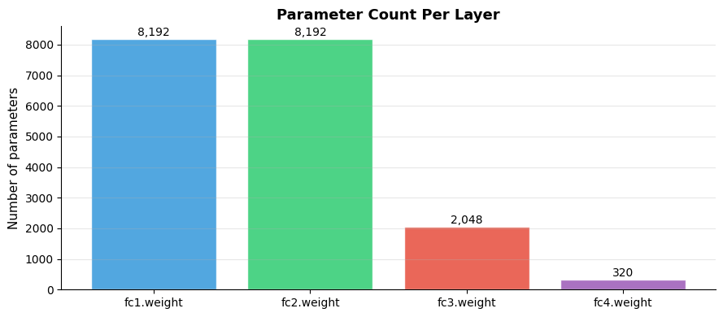

How do you define a model?#
Topics: nn.Module · init vs forward() · nn.Linear · nn.Sequential · Parameters · Saving & Loading
1. nn.Module#
What it is#
Base class for all PyTorch models — every model must subclass it
__init__: define layers and sub-modulesforward(): define how data flows through the modelPyTorch automatically tracks parameters of registered sub-modules
Key intuition#
Think of
nn.Moduleas a blueprint —__init__sets up the architecture,forward()defines the computationYou never call
forward()directly — call the model like a function:model(x)This triggers
__call__which runs hooks +forward()
Gotchas#
Always call
super().__init__()first in__init__Layers defined outside
__init__or as plain Python lists won’t be tracked — usenn.ModuleList
import torch
import torch.nn as nn
import matplotlib.pyplot as plt
# --- Basic nn.Module subclass ---
class SimpleNet(nn.Module):
def __init__(self, input_size, hidden_size, output_size):
super().__init__() # always call this first
self.fc1 = nn.Linear(input_size, hidden_size)
self.relu = nn.ReLU()
self.fc2 = nn.Linear(hidden_size, output_size)
self.dropout = nn.Dropout(p=0.3)
def forward(self, x):
x = self.fc1(x)
x = self.relu(x)
x = self.dropout(x)
x = self.fc2(x)
return x
model = SimpleNet(input_size=8, hidden_size=16, output_size=3)
print(model)
x = torch.randn(4, 8)
out = model(x)
print(f"Input shape : {x.shape}")
print(f"Output shape: {out.shape}")
# Parameter count per layer
print("Parameters per layer:")
for name, param in model.named_parameters():
print(f" {name:<20}: {param.shape}, numel={param.numel()}")
total = sum(p.numel() for p in model.parameters())
trainable = sum(p.numel() for p in model.parameters() if p.requires_grad)
print(f"Total params : {total}")
print(f"Trainable params: {trainable}")
SimpleNet(
(fc1): Linear(in_features=8, out_features=16, bias=True)
(relu): ReLU()
(fc2): Linear(in_features=16, out_features=3, bias=True)
(dropout): Dropout(p=0.3, inplace=False)
)
Input shape : torch.Size([4, 8])
Output shape: torch.Size([4, 3])
Parameters per layer:
fc1.weight : torch.Size([16, 8]), numel=128
fc1.bias : torch.Size([16]), numel=16
fc2.weight : torch.Size([3, 16]), numel=48
fc2.bias : torch.Size([3]), numel=3
Total params : 195
Trainable params: 195
2. nn.Sequential#
What it is#
Shortcut for simple linear stack of layers — no need to subclass
nn.ModuleLayers execute in the order they are defined
Useful for simple feedforward networks or building blocks inside a larger model
When to use#
Simple architectures with no branching, skip connections, or multiple inputs
Building sub-blocks within a larger
nn.Module
When not to use#
Need skip connections (ResNet-style)
Multiple inputs or outputs
Custom logic in
forward()
import torch
import torch.nn as nn
import matplotlib.pyplot as plt
# nn.Sequential — quick stack
model_seq = nn.Sequential(
nn.Linear(8, 32),
nn.ReLU(),
nn.Dropout(0.3),
nn.Linear(32, 16),
nn.ReLU(),
nn.Linear(16, 3),
)
print(model_seq)
x = torch.randn(4, 8)
out = model_seq(x)
print(f"Output: {out.shape}")
# Named Sequential (better for debugging)
model_named = nn.Sequential(
nn.Sequential(
nn.Linear(8, 32), nn.BatchNorm1d(32), nn.ReLU()
),
)
# Visualize parameter counts per layer
class MLP(nn.Module):
def __init__(self):
super().__init__()
self.fc1 = nn.Linear(64, 128)
self.fc2 = nn.Linear(128, 64)
self.fc3 = nn.Linear(64, 32)
self.fc4 = nn.Linear(32, 10)
def forward(self, x):
return self.fc4(torch.relu(self.fc3(torch.relu(self.fc2(torch.relu(self.fc1(x)))))))
mlp = MLP()
layer_names = [n for n, p in mlp.named_parameters() if 'weight' in n]
param_counts = [p.numel() for n, p in mlp.named_parameters() if 'weight' in n]
fig, ax = plt.subplots(figsize=(9, 4))
colors = ['#3498DB', '#2ECC71', '#E74C3C', '#9B59B6']
bars = ax.bar(layer_names, param_counts, color=colors, alpha=0.85, edgecolor='white')
ax.set_ylabel('Number of parameters', fontsize=11)
ax.set_title('Parameter Count Per Layer', fontsize=13, fontweight='bold')
ax.grid(True, alpha=0.3, axis='y')
ax.spines['top'].set_visible(False)
ax.spines['right'].set_visible(False)
for bar, val in zip(bars, param_counts):
ax.text(bar.get_x() + bar.get_width()/2, bar.get_height() + 20,
f'{val:,}', ha='center', va='bottom', fontsize=10)
plt.tight_layout()
plt.savefig('param_counts.png', dpi=120, bbox_inches='tight')
plt.show()
Sequential(
(0): Linear(in_features=8, out_features=32, bias=True)
(1): ReLU()
(2): Dropout(p=0.3, inplace=False)
(3): Linear(in_features=32, out_features=16, bias=True)
(4): ReLU()
(5): Linear(in_features=16, out_features=3, bias=True)
)
Output: torch.Size([4, 3])

3. Common Layers#
What it is#
PyTorch provides ready-made layers in
torch.nnEach layer has learnable parameters automatically registered
Key layers#
Layer |
Use |
|---|---|
|
Fully connected layer |
|
2D convolution |
|
Batch normalization |
|
Dropout regularization |
|
Learnable lookup table |
|
Layer normalization |
|
Transformer attention |
Interview Q&A#
What does nn.Linear actually compute?
output = input @ weight.T + biasweight shape:
(out_features, in_features)bias shape:
(out_features,)
When do you use nn.Embedding?
For categorical inputs with many categories (words, user IDs, item IDs)
Learns a dense vector representation for each category
import torch
import torch.nn as nn
# Linear
fc = nn.Linear(4, 8)
print(f"Linear weight: {fc.weight.shape}") # (out, in) = (8, 4)
print(f"Linear bias : {fc.bias.shape}") # (out,) = (8,)
x = torch.randn(3, 4)
print(f"Linear output: {fc(x).shape}") # (3, 8)
# BatchNorm
bn = nn.BatchNorm1d(8)
print(f"BN weight (gamma): {bn.weight.shape}")
print(f"BN bias (beta) : {bn.bias.shape}")
# Dropout
drop = nn.Dropout(p=0.5)
x_drop = drop(torch.ones(3, 8))
print(f"Dropout output (training): {x_drop}")
# Embedding
embed = nn.Embedding(num_embeddings=100, embedding_dim=16)
token_ids = torch.tensor([0, 5, 42, 7])
print(f"Embedding output: {embed(token_ids).shape}") # (4, 16)
# Full block combining layers
class Block(nn.Module):
def __init__(self, in_f, out_f, dropout=0.2):
super().__init__()
self.net = nn.Sequential(
nn.Linear(in_f, out_f),
nn.BatchNorm1d(out_f),
nn.ReLU(),
nn.Dropout(dropout),
)
def forward(self, x):
return self.net(x)
block = Block(8, 16)
print(f"Block output: {block(torch.randn(4, 8)).shape}")
Linear weight: torch.Size([8, 4])
Linear bias : torch.Size([8])
Linear output: torch.Size([3, 8])
BN weight (gamma): torch.Size([8])
BN bias (beta) : torch.Size([8])
Dropout output (training): tensor([[0., 0., 2., 2., 0., 0., 0., 2.],
[0., 0., 2., 2., 2., 0., 2., 2.],
[0., 0., 0., 2., 0., 0., 0., 2.]])
Embedding output: torch.Size([4, 16])
Block output: torch.Size([4, 16])
4. Saving & Loading Models#
What it is#
state_dict— ordered dictionary of model parameters and buffersSave with
torch.save(model.state_dict(), path)Load with
model.load_state_dict(torch.load(path))
Key intuition#
Never save the full model object — it’s tied to your exact file structure
Always save
state_dict— portable and version-stableFor checkpointing: also save optimizer state, epoch, loss
When to use#
Save after every epoch (checkpoint) or at best validation loss
Load for inference, resuming training, or fine-tuning
Gotchas#
Must recreate model architecture before loading state_dict
map_locationneeded when loading GPU model on CPUmodel.eval()after loading for inference
import torch
import torch.nn as nn
import os
class SimpleNet(nn.Module):
def __init__(self):
super().__init__()
self.fc1 = nn.Linear(4, 8)
self.fc2 = nn.Linear(8, 2)
def forward(self, x):
return self.fc2(torch.relu(self.fc1(x)))
model = SimpleNet()
optimizer = torch.optim.Adam(model.parameters(), lr=0.001)
# --- Save state_dict only (recommended) ---
torch.save(model.state_dict(), '/tmp/model_weights.pth')
# --- Load state_dict ---
model_loaded = SimpleNet()
model_loaded.load_state_dict(torch.load('/tmp/model_weights.pth', map_location='cpu'))
model_loaded.eval()
print("Weights loaded successfully")
# --- Save full checkpoint (for resuming training) ---
checkpoint = {
'epoch' : 10,
'model_state': model.state_dict(),
'optim_state': optimizer.state_dict(),
'loss' : 0.342,
}
torch.save(checkpoint, '/tmp/checkpoint.pth')
# --- Load checkpoint ---
ckpt = torch.load('/tmp/checkpoint.pth', map_location='cpu')
model2 = SimpleNet()
opt2 = torch.optim.Adam(model2.parameters())
model2.load_state_dict(ckpt['model_state'])
opt2.load_state_dict(ckpt['optim_state'])
start_epoch = ckpt['epoch']
print(f"Resumed from epoch {start_epoch}, loss was {ckpt['loss']}")
# Verify weights are identical
x = torch.randn(2, 4)
with torch.no_grad():
out1 = model(x)
out2 = model_loaded(x)
print(f"Outputs match: {torch.allclose(out1, out2)}")
print(f"state_dict keys: {list(model.state_dict().keys())}")
Weights loaded successfully
Resumed from epoch 10, loss was 0.342
Outputs match: True
state_dict keys: ['fc1.weight', 'fc1.bias', 'fc2.weight', 'fc2.bias']
Interview Q&A#
Why save state_dict instead of the full model?
Full model pickle is fragile — breaks if you rename files or refactor code
state_dict is just tensors — always loadable as long as architecture matches
How do you partially load weights (e.g. fine-tuning)?
Use
strict=Falseinload_state_dict()— ignores missing/unexpected keysUseful when loading a pretrained model into a modified architecture
What are buffers vs parameters?
Parameters → learnable, updated by optimizer (
nn.Parameter)Buffers → non-learnable but part of state (e.g. BatchNorm running mean/var)
Both are saved in
state_dict
Gotchas#
torch.load()withoutmap_locationtries to load to the original device — crashes if no GPUAlways call
model.eval()before inference after loadingweights_only=Trueintorch.load()is safer (avoids arbitrary code execution from pickle)